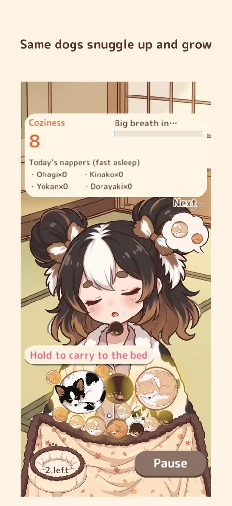
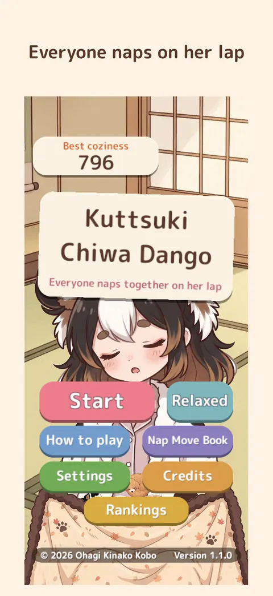
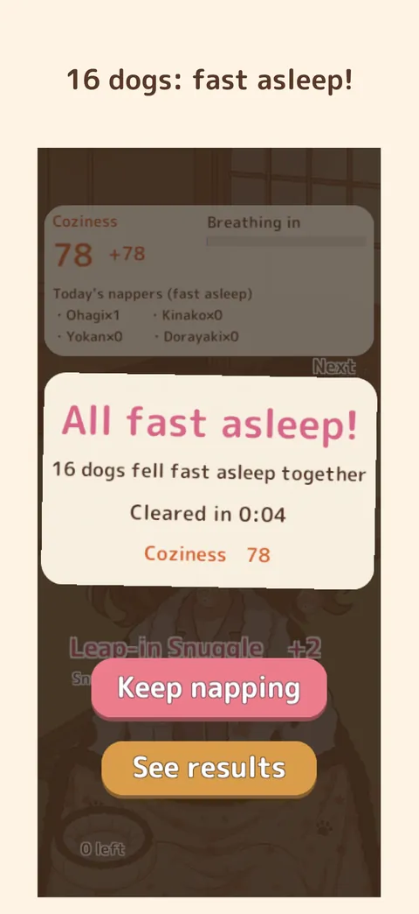
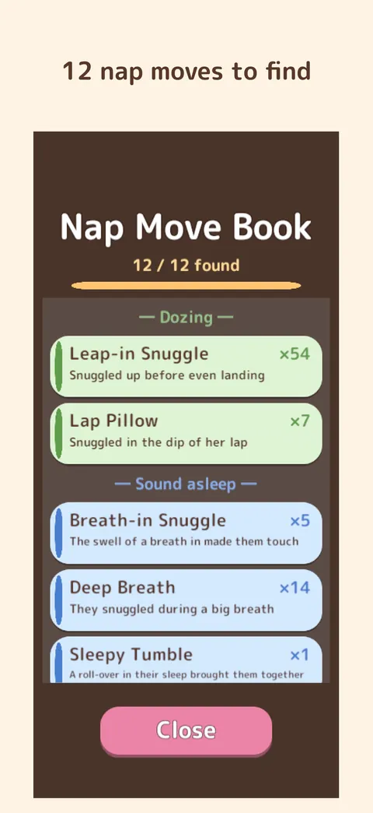
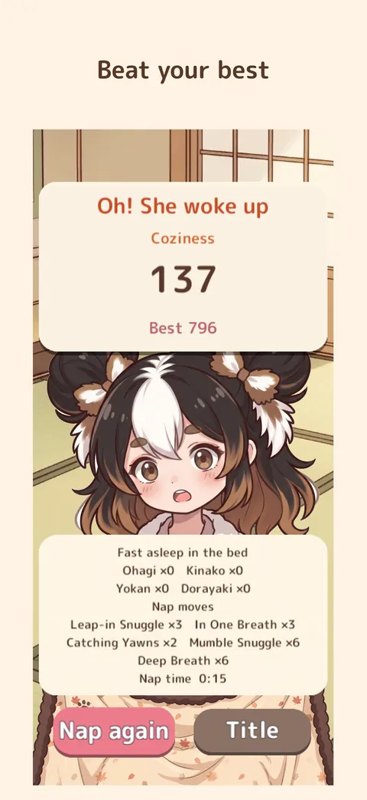

Home › Kuttsuki Chiwa Dango
Kuttsuki Chiwa Dango
A cute chihuahua nap puzzle
The owner is dozing, and little dogs hop onto her lap one by one.
When two of the same dogs touch, they snuggle up and nap together: 2, 4, 8… and when two piles of 8 snuggle up, all 16 fall fast asleep — you clear the nap!
- PriceOne-time purchase (no ads or IAP)
- DevicesiPhone & iPad (portrait) / PC browser
- LanguagesEnglish, Japanese
- Age4+

Features
- 1
Snuggle and grow
Piles of the same dog and size snuggle up and grow when they touch (1 → 2 → 4 → 8). Get 16 to clear.
- 2
A board that breathes
The owner and the dogs breathe together, swelling and shrinking. Hop down as she breathes out to float down softly.
- 3
12 nap moves
Snuggles helped by a breath or a roll-over get a name, collected in the Nap Move Book.
- 4
Seasonal blankets
The lap blanket's pattern changes with spring, summer, autumn and winter.
- 5
Relaxed mode
In Relaxed mode she never wakes up, so you can take your time.
- 6
No ads, no purchases
No in-app purchases and no ads. Plays offline.
Screenshots





← scroll sideways →
How to play
- Put a finger down to aim the waiting dog, and lift it to hop down.
- Piles of the same dog and size snuggle up and grow when they touch.
- Two 8-dog piles make 16 and clear the nap — you can keep going after that. Twice a nap, hold an 8-dog pile to carry it to the bed.
- If a dog stays above her chin for a moment, she wakes up — and the nap is over.
The dogs
Four of them come to each nap.

Ohagi
Chihuahua × Papillon
The studio's model dog: black head with a white stripe, big feathered ears and a curly white tail.

Shiratama
Chihuahua × Maltese
All white and fluffy.

Kinako
Chihuahua × Pomeranian
White and cream, with soybean-flour-coloured fur.

Yokan
Chihuahua × Dachshund
Dark brown and tan, floppy ears and a long body.

Dorayaki
Chihuahua × Toy Poodle
Curly apricot coat.
FAQ
How much is it?
The App Store version is a one-time purchase. Please check the current price on the App Store page (it is sometimes free or on sale for a limited time).
The browser versions on unityroom and itch.io are free.
Any ads or in-app purchases?
Neither.
Does it work offline?
Yes. Scores are sent only for Game Center leaderboards and achievements, and only when you are signed in.
Is it hard?
There's a Relaxed mode where she never wakes up (records and rankings are not kept in that mode). "How to play" is always available from the title and pause screens.
Where is my progress saved?
Automatically on your device (best coziness, fastest clear, Nap Move Book). Deleting the app deletes it.
Do you use AI?
The dogs' 3D models (turned into 2D pictures) were made with Meshy, and the owner, blanket, room and props with Google Gemini, then picked and adjusted by the developer. The code and text were written with Claude Code and reviewed by the developer. No AI content is generated while you play. Music and sound effects are human-made.
Privacy in short
- No personal information is collected, and there are no accounts.
- No ads and no analytics.
- Progress stays on your device and is deleted with the app.
More games
-

Chiwa-Chiku RUN
Collect chikuwa, dodge obstacles and dash to the goal in this cosy 3D dog runner.
Free · no ads · no purchasesiPhone & iPad / PC -

Amiami Chiwa Osanpo
The dogs' leashes got braided on the walk. Swap dogs and handles to straighten them out.
Free (ads; Remove Ads available)iPhone & iPad / PC browser -

Chiwa, Stay!
The dogs are told to stay, but they creep forward. At "OK!", whose nose was ahead?
Free (ads; Remove Ads available)iPhone & iPad -

Chiwa Hanko Kacho
Chief Ohagi, a chihuahua, stamps documents with a seal on the tip of his tail. Chief Neko checks every one.
Free · no adsPC browser (unityroom)